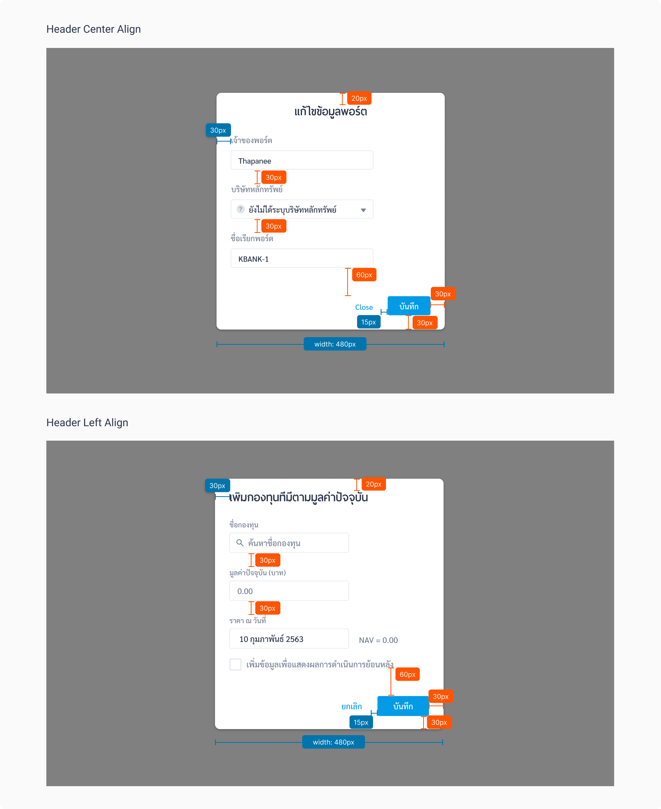

Popup
A popup (also known as an overlay) is a window or dialog that appears on top of the page content allowing users quick access to information if they choose to.
| Types | Purpose |
|---|---|
| Full page | ใช้กับหน้าที่ต้องการแสดงตาราง หรือแสดงค่าที่ให้ User อ่าน |
| Normal | ใช้กับหน้าที่ข้อมูลไม่เยอะ เช่น หน้ากรอกฟอร์ม หรือหน้าที่ต้องการให้ User ยืนยัน |
Spec
Full page popup
Normal popup
Example
The following HTML code is based off the Ahancer Seed
Full page popup
Normal popup
Usage
1. Contextually Relevant and Non-intrusive Popups
Repeated popups displayed after the user enter can be really bothersome and intrusive.
DO
Give users some time and space to complete their tasks after logging into their account and don’t show popups right away. It’s acceptable to eventually present helpful new features after some time has gone by, but only if the user’s task is enhanced or further supported by the content presented or by the new functionality.

DON'T
Don’t use popups that take up a lot of screen real estate. And don’t make the popup appear again and again even after the user closes it.
2. Showing multiple popups one after another

DO
If a popup is needed show only one at a time. Even better, don’t show critical information in a popup, since people tend to close them without reading.
DON'T
Don’t use popups that take up a lot of screen real estate. And don’t make the popup appear again and again even after the user closes it.
3. Full page popup
ส่วนใหญ่จะใช้กับหน้าที่ต้องการแสดงตาราง หรือแสดงค่าที่ให้ User อ่าน